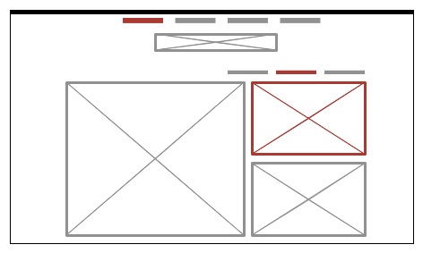
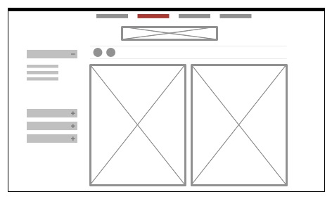

I chose SquareSpace.com because it doesn't get in the way of itself. The page is designed to get users to start creating websites (their product).
I chose LonelyPlanet.com because they do a good job of balancing two needs: users who are travel dreaming and want to get lost in the content and users looking for very specific information.
The strength of SquareSpace.com is the focal point "Choose Your Template" at the top of the page, which is emphasized with ample negative space. This combination leads the eye to the templates or their product.
Where SquareSpace.com uses design to encourage browsing of templates, LonelyPlanet.com uses design to convey lots of different travel products and advice. Instead of using one focal point, the index page is used as visual navigation to all the other pieces of content on the site. Designed responsively, the site's 8x3 grid turns into a 2x12 grid when viewed on a mobile device. In both views, all pieces of content are the same size, therefore attracting the same visual attention.
The site I would like to create is a shopping site aimed at putting the products on display.
The index page focuses on three main images with the focal point being the larger image on the left-hand side. The main navigation is at the top of the page to provide more negative space and therefore draw more attention to the three products on the page.
When a product is selected (noted in red) it becomes the primary image on the page. This is balanced by the item name, price, and description located to the right of the image. Arrows are provided for easy paths to different products. The header and logo remain unchanged to keep the design consistent from page to page.
Once the Add to Cart button is selected, the black Add to Cart button appears to the right of the header.
This page allows users to quickly sort through products to find what they are looking for. The focal point remains on the products. A 2x2 grid shows the different products giving users the option to change the layout (the two cirlces located above the images).
